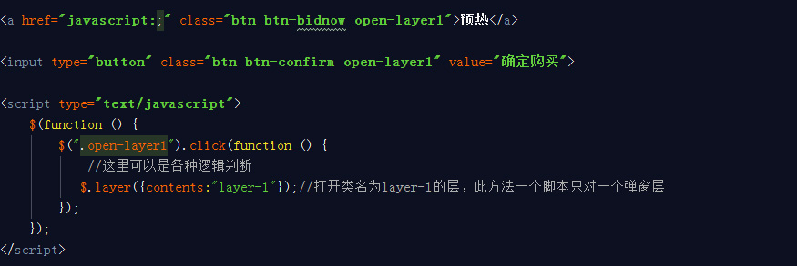

| 参数 | 说明 |
|---|---|
| width | 窗口宽度，数值型，默认为空，即为调用内容的宽度； |
| height | 窗口高度，数值型，默认为空，即为调用窗口的高度；如窗口高度高于浏览器，则按浏览器高度显示，内容区域自动出现滚动条。一般情况可不设置; |
| trigger | 触发事件，默认为click，注意用mouseover代替hover； |
| autoclose | 是否自动关闭窗口，数值型，单位为秒，默认为0不自动关闭； |
| title | 窗口标题，默认为空，也可直接写在窗口里； |
| contents | 窗口调取的内容，默认读取当前属性data-action的值作为类名，仅当poptype=0时；根据poptype的不同有三种写法，1)读取当前页面隐藏div时contents:".class"（仅支持类，前面.号可省略）,2)读取url时contents:"test.html"，需要设置宽高,3)直接显示文字内容contents:"要显示的文字"； |
| poptype | 窗口类型，数值，三种值：0读取本页隐藏div(默认)，1加载外部文档，2直接显示contents文本； |
| addclass | 窗口类名，默认为空； |
| position | css样式位置，默认为fixed；只有absolute和fixed两种； |
| closeparent | 多层弹窗口时是否关闭父窗口，布尔型(true|false),默认为true； |
| confirm | 确定按钮文本，默认为空即不显示； |
| confirmback | 点击确定按钮后执行的函数，可带返回对象；仅当confirm不为空时才会触发回调confirmback函数；当回调为空时，点击确定后默认关闭窗口； |
| cancel | 取消按钮文本，默认为空即不显示； |
| cancelback | 点击取消按钮后执行的函数，可带返回对象；仅当cancel不为null时才会触发回调cancelback函数；回调为空时，点击取消后默认关闭窗口； |
| closeback | 关闭时执行的函数，默认为空，可带返回对象；点击时关闭窗口，回调时不关闭窗口； |
| loadback | 窗口开始加载时执行的函数； |
| afterback | 窗口加载完时执行的函数；可带返回对象； |
| move | 允许窗口拖动，默认为true； |
| masklayer | 显示遮罩层，默认为body。false时不显示，值为遮罩层显示位置，即将遮罩层放在指定的标签内，方便在一些框架页里遮罩层只显示在主内容区 |
| align | 窗口默认垂直居中对齐，默认为true居中，false时请在css中设置left和top。方便将窗口定位在其它位置 |
| showclose | 显示关闭按钮，true或false，默认true |
| shadeclose | 默认为flase;点击遮罩关闭 false不关闭 |
| animation | 弹出层css3动画效果，仅在支持的浏览器，默认为1。动画序号对应animation样式的alert-anim-*。若不需要动画，删除对应样式或添加一个不存在的样式即可 |
示例
支持两种引用方法：除contents外其它所有参数均可不填写
1、直接绑定标签，如$(".div").layer();当样式名为div的标签点击时即可触发；contents可在标签中通过设置data-action="layer-1"设置，等价于：$(".div").layer({contents:".layer-1"})
2、直接引用，如$.layer({contents:"必须要带内容"});
确认取消关闭回调：
返回的对象相当于$(".当前窗口层样式")
代码：

加载完成回调
重复打开关闭同一个窗口时,窗口中的表单会保持上一次关闭状态，可通过加载完成回调恢复初始状态
加载完成回调
两种引用方法间转换（方便技术）
静态页为方便及减少重复的脚本编写，大部分的弹窗都会引用同一个js脚本，如：
<input type="button" class="btn-confirm open-layer" data-action="layer-2" value="确认">
只需把触发弹窗的样式名去掉，也可以同时去掉data-acion，上面红字部分，然后通过$.layer({contents:".layer-2"})引用。这里的contents为上面的data-action的值
如下图

上下两种方法是一样的，都可打开类名为layer-1的层，可相互转换，对于下图方法去掉触发弹出层的样式名open-layer即可，自定义添加样式名或id编写click事件，如下图

关闭窗口
1、窗口内的所有close类都可以关闭当前窗口；
2、执行layer.close()可关闭页面所有窗口；同时可带参数layer.close($(".layer-1"))，关闭指定的窗口或隐藏其它标签
内置两种特殊样式，成功及失败提示
在引用时添加样式success或者failure，如：addclass:"success"